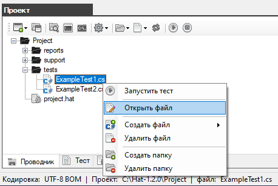
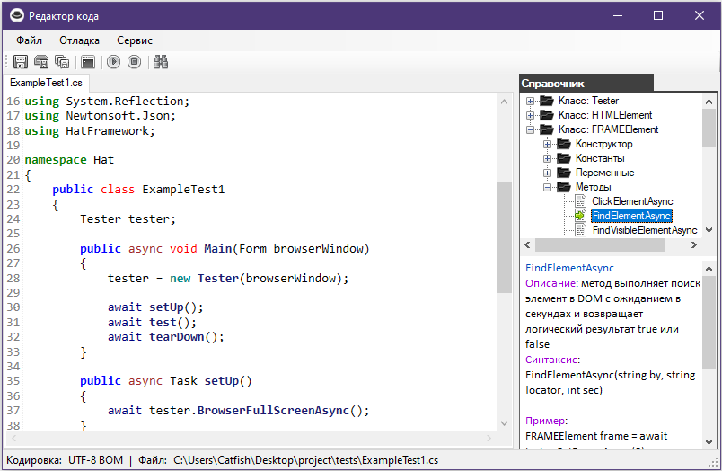
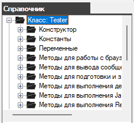
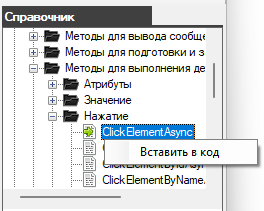
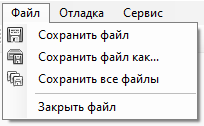
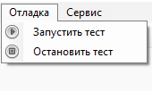
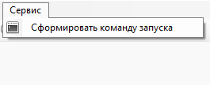
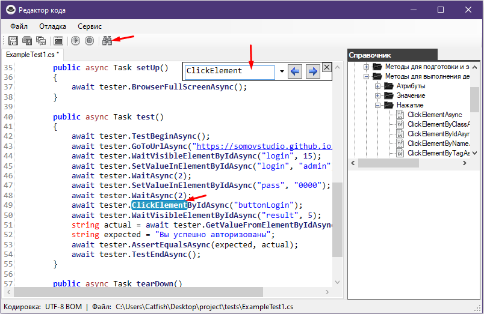
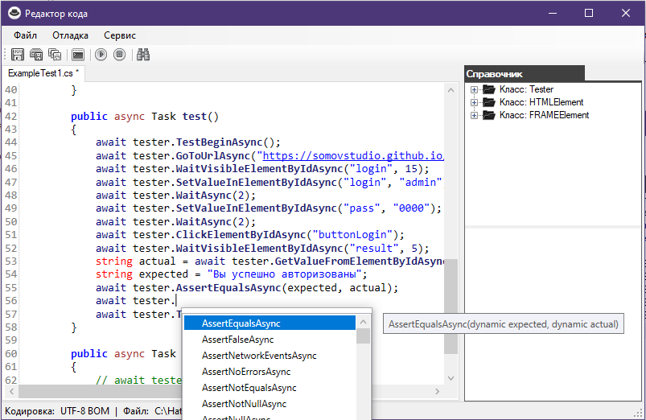

Встроенный редактор кода на C#
Редактирование автотестов выполняется в специальном редакторе.
Чтобы открыть файл с расширением *.cs в редакторе вам нужно в окне "Проект" (на вкладке "Проводник")
дважды нажать на нужный файл или вызвать контекстное меню и выбрать пункт "Открыть файл".

Перед вами откроется следующее окно редактора.

Редактор с подсветкой ключевых слов, а так же справочной информацией о встроенных методых фреймворка HatFramework.
Вам не нужно вручную набирать имена методов, достаточно будет нажать на нём дважды (или через пункт контекстного меню) чтобы метод автоматически был вставлен в код.
 
На панели инструментов присутствуют кнопки:

Основное меню

Файл:
Отладка:
Сервис:
Выполнение поиска
Чтобы открыть окно поиска нужно нажать на кнопку поиска  или нажать сочетание клавишь CTRL+F.
или нажать сочетание клавишь CTRL+F.

В редакторе доступен высоз списка встроенных методов для упрощения написания кода.

Created with the Personal Edition of HelpNDoc: Full-featured Documentation generator